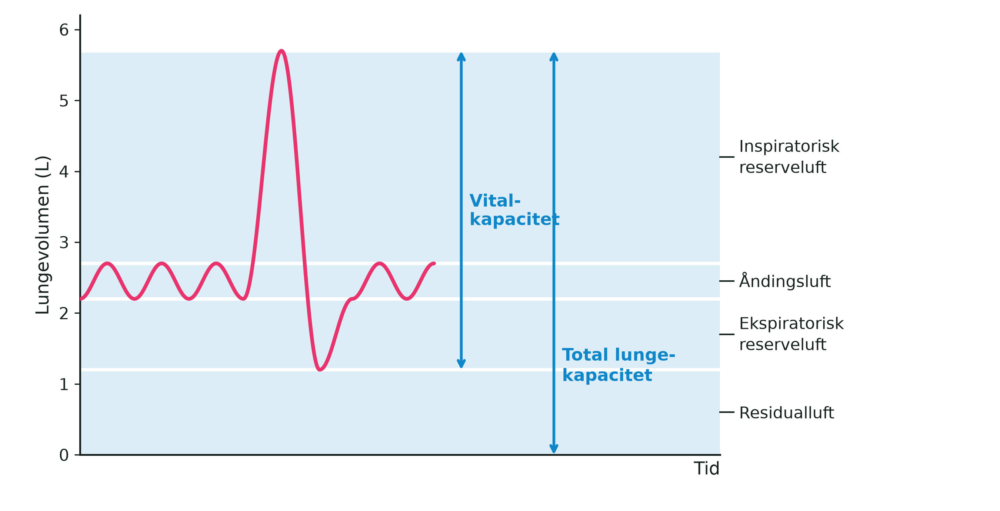

Vitalkapacitet
Måling med lommespirometer
Dato: ____________________ Gruppe / navne: ____________________________________________
Om øvelsen
Vitalkapaciteten er den største luftmængde, man kan puste ud efter en maksimal indånding — altså den største respirationsdybde, en person kan præstere. Den måles i liter og er et udtryk for, hvor stor en luftmængde der er til rådighed i lungerne til at skaffe kroppen ny, livsvigtig (= vital) ilt. I skal måle jeres egen vitalkapacitet med et lommespirometer og samle klassens målinger, så I kan sammenligne kønnene og undersøge, om vitalkapaciteten hænger sammen med højden.

Hos voksne kvinder ligger vitalkapaciteten normalt mellem 3 og 5 liter, hos mænd mellem 4 og 6 liter. Store og kraftige personer har naturligt større lunger, og lungefunktionen falder med alderen, fordi brystkassen bliver mindre bevægelig og åndedrætsmuskulaturen svækkes. Lungernes størrelse er i det væsentlige arveligt bestemt, men de muskler, sener og led, der medvirker ved den kraftige ind- og udånding, kan trænes — derfor har veltrænede personer alligevel ofte en større vitalkapacitet.
Et spirometer (af latin spirare = ånde og metrum = måle) måler den luftmængde, der skiftes ud ved ind- og udånding. Lommespirometret er en lille, mekanisk udgave: man blæser i et mundstykke, og luftmængden aflæses direkte på en skala forrest på apparatet.
Fremgangsmåde
- Mål jeres højde uden sko, og notér den sammen med køn og alder i skemaet.
- Sæt et nyt engangsmundstykke på lommespirometret, og stil jer op.
- Nulstil apparatet ved at dreje på skiven, så målepilen står ud for nul på skalaen.
- Tag et par dybe indåndinger.
- Placér mundstykket i munden efter den sidste dybe indånding, og luk læberne tæt om det.
- Blæs støt og kraftigt, så længe I kan, og pres så meget luft ud af lungerne som muligt. Udåndingen skal være jævn og være afsluttet i løbet af 5–6 sekunder.
- Aflæs værdien i liter, og notér den. Nulstil apparatet, og gentag målingen i alt tre gange — I behøver ikke skifte mundstykke mellem jeres egne målinger.
- Brug den højeste af de tre målinger som jeres vitalkapacitet, og skriv den i klassens skema.
- Tør mundstykket og apparatet af med sprit og papir efter brug.
- Læberne skal slutte helt tæt om mundstykket. Slipper der luft ud ved siden af, bliver målingen for lav.
- Stå oprejst under målingen. Sidder man sammensunket, kan brystkassen ikke udvide sig frit, og resultatet bliver for lille.
- Hold en pause på et halvt minut mellem de tre målinger, så I ikke bliver svimle.
- Alle i klassen skal måle på samme spirometer og måle højden med samme målebånd — ellers kan tallene ikke sammenlignes.
- Lommespirometer
- Engangsmundstykker — ét pr. person
- Sprit og papir til aftørring
- Målebånd eller højdemåler
- Hvert mundstykke bruges kun af én person. Mundstykker må aldrig deles eller genbruges af andre.
- Tør apparatet af med sprit, inden det går videre til den næste.
- De dybe indåndinger kan gøre jer svimle. Mål stående tæt ved en stol, og sæt jer, hvis I bliver utilpasse.
- Har I astma, en luftvejsinfektion eller andet, der gør det ubehageligt at puste maksimalt ud, så sig det til læreren. I kan sagtens deltage i databehandlingen uden selv at blive målt.
Registrering af målinger
Forsøgsperson: ____________________ Køn (K/M): ______ Alder: ______ år Højde (uden sko): ______ cm
| Måling 1 | Måling 2 | Måling 3 | Højeste måling | |
|---|---|---|---|---|
| Vitalkapacitet (L) |
Skriv derefter dit resultat ind i klassens skema sammen med de andres.
| Navn | Køn (K/M) | Alder (år) | Højde (cm) | Vitalkapacitet (L) |
|---|---|---|---|---|
Databehandling
- Beregn klassens gennemsnitlige vitalkapacitet for henholdsvis piger og drenge.
- Afsæt vitalkapaciteten som funktion af højden i et koordinatsystem, med piger og drenge i hver sin farve.
- Vurdér ud fra grafen, om der i jeres data er en tilnærmelsesvis lineær sammenhæng mellem højde og vitalkapacitet.